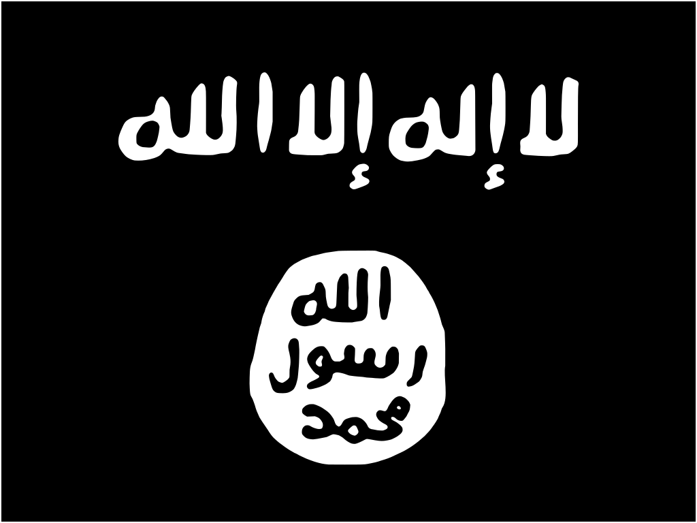
The Islamic State (IS), also known as the Islamic State of Iraq and Syria (ISIS), the Islamic State of Iraq and the Levant (ISIL), or by its Arabic acronym Daesh, is an international salafi jihadist militant organization and unrecognized caliphate. IS made its start as Islamic State in Iraq during the post invasion phase of that war, waging an insurgent and terrorist campaign against shi'ite and American forces . During the start of the Syrian Civil War, ISI would send fighters to assist Jabhat al Nusra
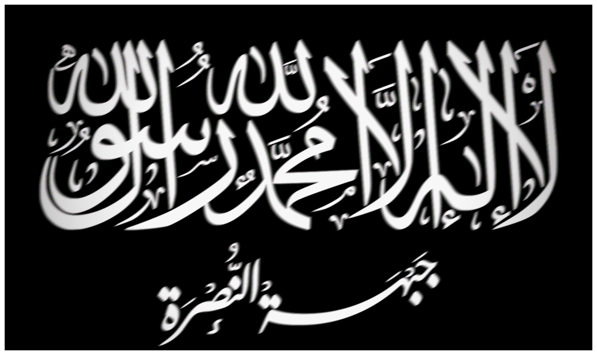
, al-Qaeda's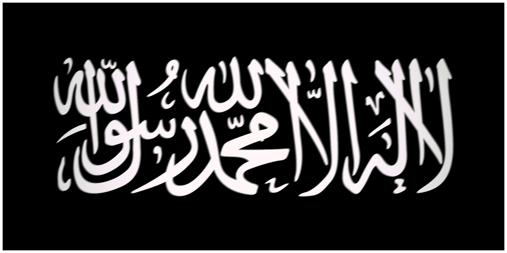
official branch in Syria, in the fight against Assad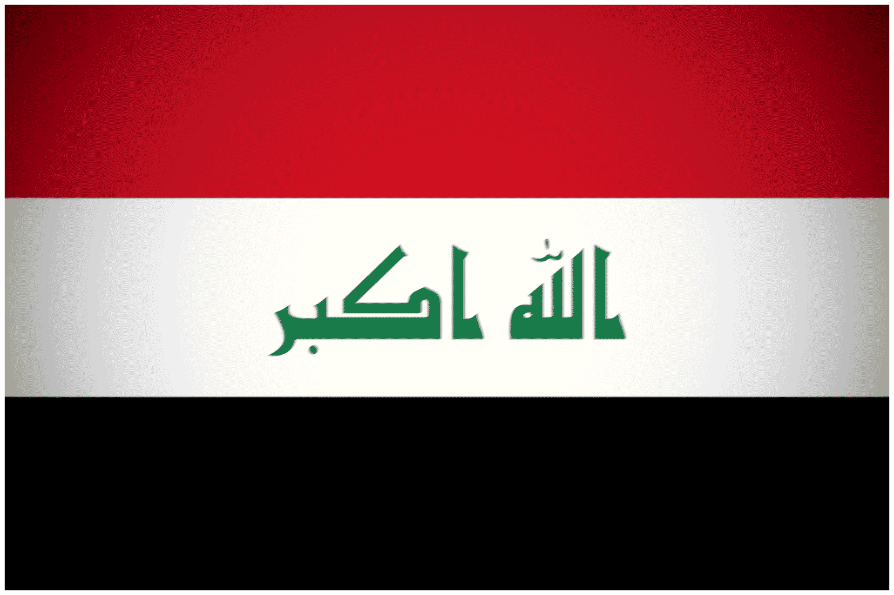
, fighting nearly all combatants in both conflicts and occupying large swathes of both countries. Internationally, IS would not only draw foreign fighters to Syria, but they also worked to establish cells and territorial control in others countries like Libya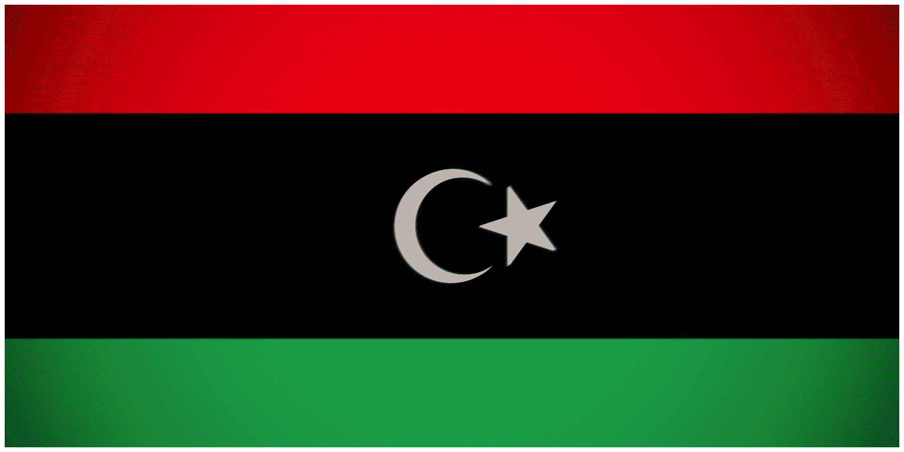
, Mali , Yemen , and Afghanistan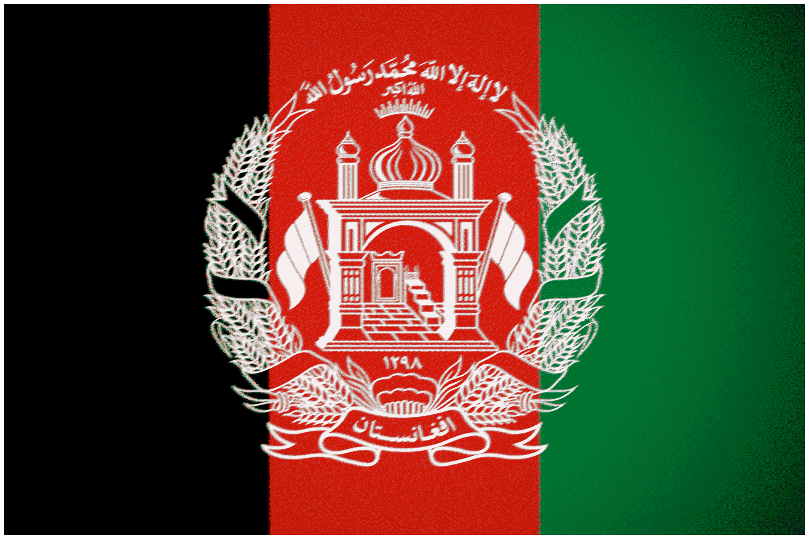
. In occupied territories, IS would attempt to create an administrative state following strict shariah law, differentiating them from other jihadist groups like al-Qaeda . Over the course of the latter half of the 2010s, IS territory in Syria
The Islamic State is one of the most unique transnational jihadist groups in the world, both in presentation and ideology. Unlike Al-Qaeda or Hizb ut-Tahrir  , all IS branches, for there are many, swear their allegiance a single caliph usually residing somewhere in the Mashriq. Ideologically, IS represents the hardest fringe of conservative Islam. It believes in salafism, or returning to the Islam of the first few caliphs, and active takfirism, or the excommunication of a muslim by another. IS uses takfirs liberally, deploying them against rafidah shia, internationally recognized Arab governments who work with Israel
, all IS branches, for there are many, swear their allegiance a single caliph usually residing somewhere in the Mashriq. Ideologically, IS represents the hardest fringe of conservative Islam. It believes in salafism, or returning to the Islam of the first few caliphs, and active takfirism, or the excommunication of a muslim by another. IS uses takfirs liberally, deploying them against rafidah shia, internationally recognized Arab governments who work with Israel
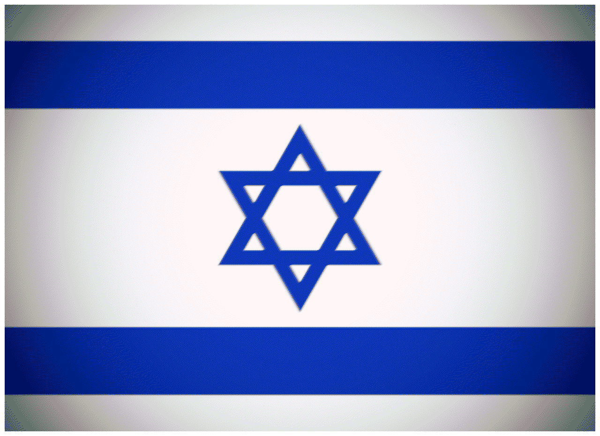
or America , and islamist rivals like al-Qaeda . The Islamic State's sheer disdain for the shia made them different from al-Qaeda , who wanted to push the shia issue to the backburner to focus on the United States . IS' love for violence and killing disbelievers wherever they see them has gathered intense criticism from most clerics, even including many jihadist and islamist ones. Due to this, IS have been compared to the “Khawarij”, a medieval islamic group known for their fanaticism and radicalism. They also hate nationalism, with IS ideologues stating that any muslim who swears fealty to any national government or constitution is at best an apostate and at worst a kafir, or infidel. In practice, this means that IS fighters do not help or assist any islamist group that professes any belief in nationalism, whether it is from Hamas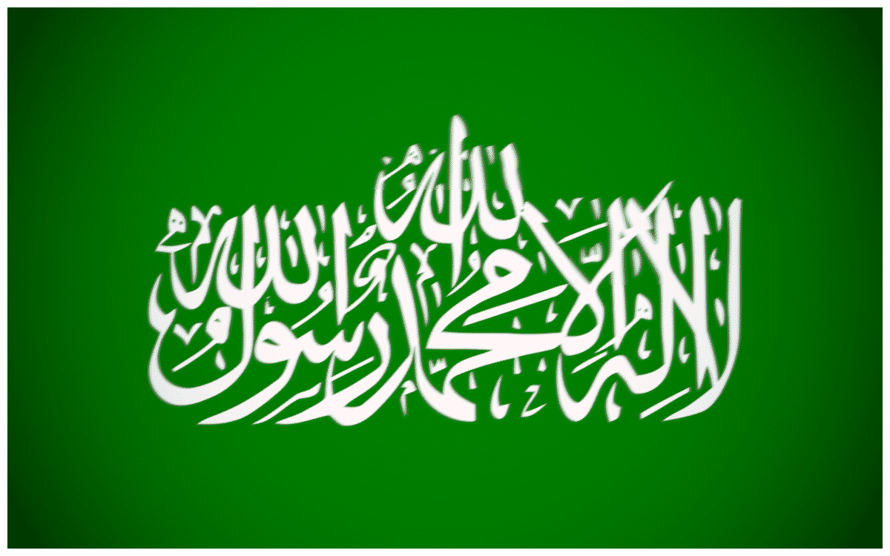
, al-Shabaab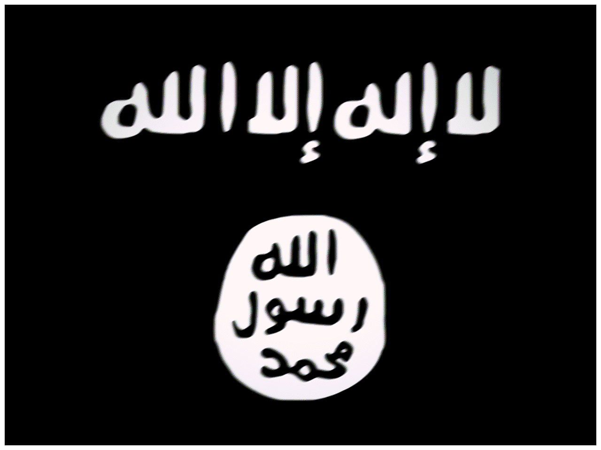
or HTS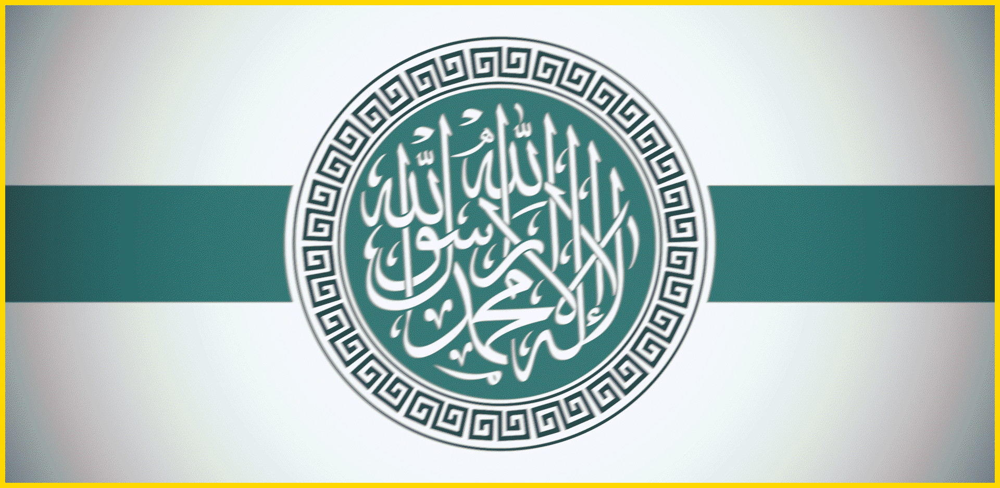
.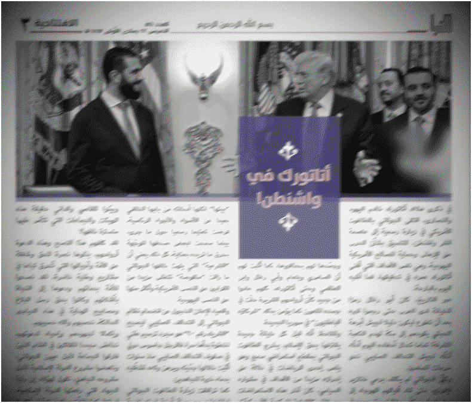
Fig 1. IS AL-NABA MAGAZINE PUBLICATION CALLING THE NEW SYRIAN GOVERNMENT APOSTATES FOR MEETING US PRESIDENT TRUMP c. NOVEMBER OF 2025
IS feeds on instability and poverty, using local grievances and tyranny to recruit fighters. Examples include scapegoating Alawites and Shi'ite Iranians in Syria
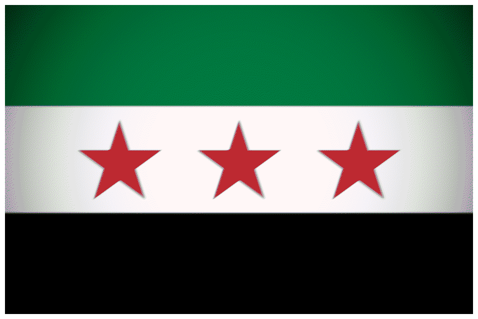
, Ethiopian christians in Somalia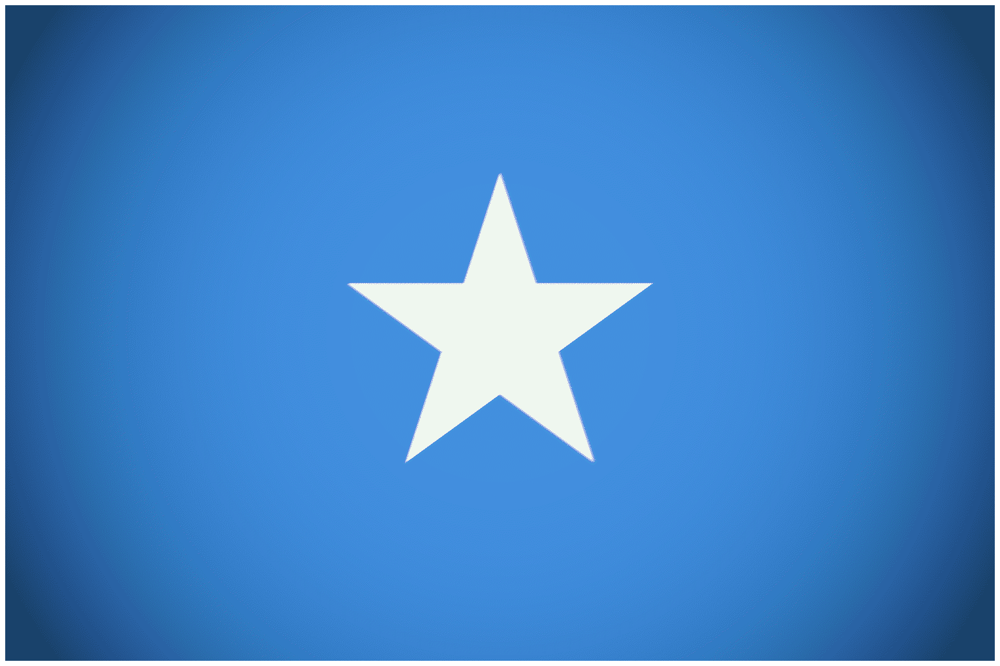
, and using racism by Europeans to recruit muslims in that continent. In the West, the Islamic State exploits the discrimination, hopelessness, and isolation of young muslim men for recruiting, showing them a supposedly better version of the future. Unlike al-Qaeda’s grainy videos of one of Bin Laden’s speeches, the Islamic State created long form, highly edited and “professional” videos through a multitude of media fronts across the world. IS propaganda is spread through magazines (Dabiq), social media (Twitter, Facebook), and radio stations (al-Bayan). Through all of these efforts, IS has recruited a large number of foreign fighters and lone wolf terrorists from western and non-muslim majority countries as a whole. Their successful use of slick propaganda films influenced other terrorist groups around the world, including neo-nazis like the Atomwaffen Division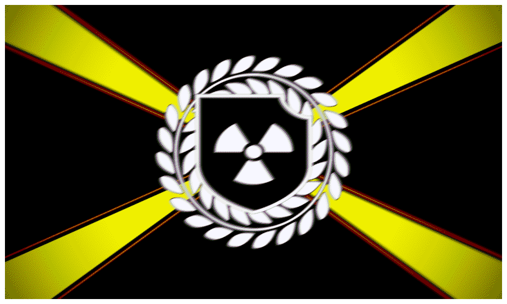
in the west and Hamas during the current Gaza war. Terrorist propaganda would never be the same.The tactics of the Islamic State are often tied to their ideology. For example, the political branch of IS’ idolization of martyrdom lead to an explosion of use by IS forces on the ground of suicide bombers and SVBIEDs. IS lays a large amount of small IEDs in order to slow down enemy forces, who are forced to sweep for them. The Islamic State’s largest and most important innovation in modern warfare was their use of expendable drones that held IEDs and other bombs. Before this point, UAVs were expensive and usually used by state actors like the United States and Russia
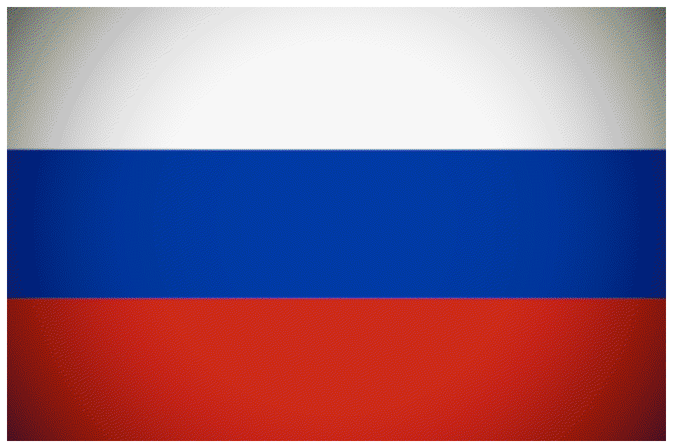
against insurgents. ISIS also used said commercial drones to create propaganda and footage of their forces. In its peak, the Islamic State also deployed an array of chemical weapons, including during the Battle of Mosul, but never to great effect, though they did stir up international worry. Unlike the jihadist groups of the 2000s, the Islamic State used a wide variety of captured and modified tanks. IS operated a "workshop", where it would modify main battle tanks and add all sorts of things, including camouflage, slat armor, and various anti-detection measures against jets and drones. Remains of tanks would be scrapped for spare metal which would be used in "the workshop". With IS pushed back in most parts of Syria• Attacks attributed to the Islamic State
• Battles Involving the Islamic State
• https://academic.oup.com/ia/article/96/4/955/5813533
• https://www.oryxspioenkop.com/2017/08/armour-in-islamic-state-story-of.html
• https://www.understandingwar.org/sites/default/files/ISIS_Governance.pdf